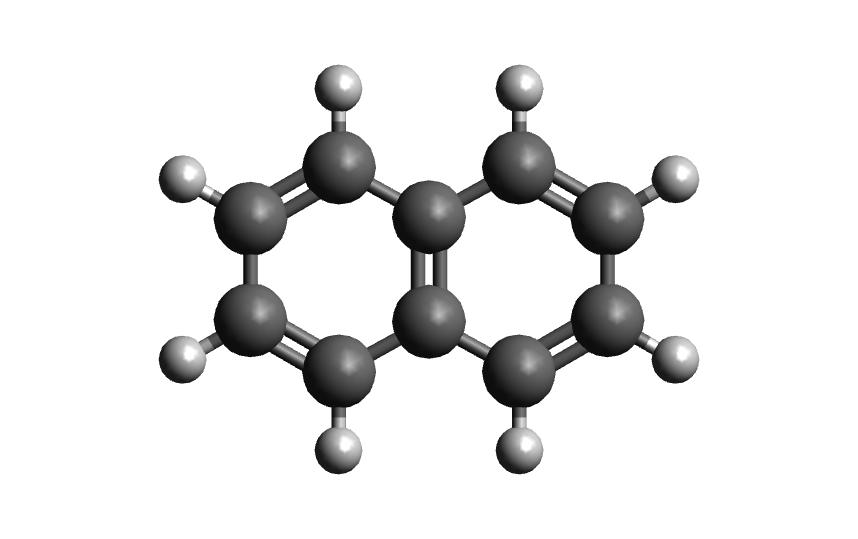

Tutorial
The following tutorial illustrates the basic usage of Autosolvate in the command line interface (CLI).
There will be three example systems: naphthalene in water, naphthalene radical in chloroform, naphthalene in acetonitrile
Prerequisites
Once you have AutoSolvate and all dependencies installed you will need the solute xyz file and then you are ready to go! Make sure to give each molecule its own directory to avoid the possibility of overwriting the amber files when running two at a time. The naphthalene neutral and radical coordinates are provided below so that you can follow along on your own computer:
{kind=link}
18
naphthalene neutral
C 2.4397703245 -0.7099883961 0.0000206200
C 2.4397218526 0.7099981201 0.0000271508
C 1.2475921776 1.4061556571 0.0000203110
C -0.0000128759 0.7189947033 0.0000073141
C -1.2476290200 1.4061688746 0.0000008829
C -2.4397553974 0.7100487925 -0.0000117263
C -2.4397460082 -0.7099448889 -0.0000182422
C -1.2476288777 -1.4062156405 -0.0000121401
C 0.0000138676 -0.7190995078 0.0000006641
C 1.2476602178 -1.4062240260 0.0000074983
H 1.2448250471 -2.4927306634 0.0000020169
H -1.2447711187 -2.4927196649 -0.0000168971
H -3.3840069825 -1.2452230520 -0.0000277743
H -3.3839437525 1.2454155894 -0.0000167697
H -1.2448430780 2.4926825384 0.0000062499
H 1.2447883528 2.4926610011 0.0000242506
H 3.3839630326 1.2452901872 0.0000373621
H 3.3840333383 -1.2452476243 0.0000259290
18
naphthalene radical
C 2.4584929186 -0.6980401434 0.0000208854
C 2.4584830542 0.6980208281 0.0000273558
C 1.2392834454 1.4064616303 0.0000201346
C -0.0000127820 0.7187236077 0.0000072068
C -1.2393189424 1.4064428097 0.0000009527
C -2.4585398474 0.6980627613 -0.0000119130
C -2.4584830245 -0.6980052848 -0.0000182990
C -1.2392726206 -1.4064393494 -0.0000121035
C 0.0000166810 -0.7186826023 0.0000005670
C 1.2392855074 -1.4064696461 0.0000073561
H 1.2470800358 -2.4919577916 0.0000018617
H -1.2470920207 -2.4919275393 -0.0000168975
H -3.3951566422 -1.2429180456 -0.0000277271
H -3.3952681112 1.2428765068 -0.0000168560
H -1.2469606339 2.4919363439 0.0000063915
H 1.2471333000 2.4919523490 0.0000239494
H 3.3951743890 1.2429028846 0.0000376679
H 3.3951863936 -1.2429173191 0.0000261673
Now that you have the structures, make a directory for each example. We will start with the neutral molecule.
Example 1: Naphthalene in Water
Step 1: Solvate system
The first step is putting the solute in the solvent box, which uses the boxgen command. The documentation shows all of the options for this command, but the only one that is required is specifying the solute xyz file. It will be listed as -m for main. To run boxgen with all of the default settings, use the following command:
autosolvate boxgen -m naphthalene_neutral.xyz
Autosolvate will use the default values of water as the solvent, solute charge of 0, solute multiplicity of 1, charge fitting method of resp, box size of 54, and output file name of water_solvated.
If AutoSolvate is running successfully, the following messages will be printed to your screen:
AutoSolvate is starting in command line mode!
Running the module to generate solvent box and force field parameters.
['-m', 'nap_neutral.xyz']
Main/solutexyz nap_neutral.xyz
WARNING: Amber home directory is not specified in input options
WARNING: Checking AMBERHOME environment variable...
['echo', '$AMBERHOME']
WARNING: AMBERHOME detected: $AMBERHOME
Converting xyz to pdb
Generate frcmod file for the solute
cleaning up solute.xyz.pdb
Then write out mol2
Welcome to antechamber 21.0: molecular input file processor.
acdoctor mode is on: check and diagnose problems in the input file.
The atom type is set to gaff; the options available to the -at flag are
gaff, gaff2, amber, bcc, and sybyl.
-- Check Format for pdb File --
Status: pass
-- Check Unusual Elements --
Status: pass
-- Check Open Valences --
Status: pass
-- Check Geometry --
for those bonded
for those not bonded
Status: pass
-- Check Weird Bonds --
Status: pass
-- Check Number of Units --
Status: pass
acdoctor mode has completed checking the input file.
Info: Total number of electrons: 68; net charge: 0
Running: /jet/home/agale/miniconda3/envs/autosolvate/bin/sqm -O -i sqm.in -o sqm.out
Finally generate frcmod with parmchk2
Now create the solute library file
Generate Amber parameters for the solvated system
Now add pre-equlibrated solvent box to the solute
The script has finished successfully
Additionally, you should now have the following files in your directory:
ANTECHAMBER_AC.AC ATOMTYPE.INF nap_neutral.xyz sqm.in
ANTECHAMBER_AC.AC0 leap_add_solventbox.cmd solute.frcmod sqm.out
ANTECHAMBER_AM1BCC.AC leap_add_solventbox.log solute.lib sqm.pdb
ANTECHAMBER_AM1BCC_PRE.AC leap.cmd solute.mol2 water_solvated.inpcrd
ANTECHAMBER_BOND_TYPE.AC leap.log solute.pdb water_solvated.pdb
ANTECHAMBER_BOND_TYPE.AC0 leap_savelib.log solute.xyz.pdb water_solvated.prmtop
The three files that we care about for moving forward to the next step are the ones with the output prefix water_solvated (the last three listed above). The .inpcrd file contains the input coordinates, and the .prmtop file contains the Amber parameter topology. The .pdb file has the coordinates for the solute in the solvent box, so you want to check that both the solvent and the solute are there. The block below shows the first few lines of the .pdb file:
CRYST1 66.461 66.696 66.822 90.00 90.00 90.00 P 1 1
ATOM 1 C SLU 1 2.302 -0.634 0.016 1.00 0.00
ATOM 2 C1 SLU 1 2.302 0.786 0.016 1.00 0.00
ATOM 3 C2 SLU 1 1.110 1.482 0.016 1.00 0.00
ATOM 4 C3 SLU 1 -0.138 0.795 0.016 1.00 0.00
ATOM 5 C4 SLU 1 -1.386 1.482 0.016 1.00 0.00
ATOM 6 C5 SLU 1 -2.578 0.786 0.016 1.00 0.00
ATOM 7 C6 SLU 1 -2.578 -0.634 0.016 1.00 0.00
ATOM 8 C7 SLU 1 -1.386 -1.330 0.016 1.00 0.00
ATOM 9 C8 SLU 1 -0.138 -0.643 0.016 1.00 0.00
ATOM 10 C9 SLU 1 1.110 -1.330 0.016 1.00 0.00
ATOM 11 H SLU 1 1.107 -2.417 0.016 1.00 0.00
ATOM 12 H1 SLU 1 -1.383 -2.417 0.016 1.00 0.00
ATOM 13 H2 SLU 1 -3.522 -1.169 0.016 1.00 0.00
ATOM 14 H3 SLU 1 -3.522 1.321 0.016 1.00 0.00
ATOM 15 H4 SLU 1 -1.383 2.569 0.016 1.00 0.00
ATOM 16 H5 SLU 1 1.107 2.569 0.016 1.00 0.00
ATOM 17 H6 SLU 1 3.246 1.321 0.016 1.00 0.00
ATOM 18 H7 SLU 1 3.246 -1.169 0.016 1.00 0.00
TER
ATOM 19 O WAT 2 30.753 27.440 26.571 1.00 0.00
ATOM 20 H1 WAT 2 30.672 26.525 26.300 1.00 0.00
ATOM 21 H2 WAT 2 30.339 27.937 25.865 1.00 0.00
TER
ATOM 22 O WAT 3 28.885 29.218 28.452 1.00 0.00
ATOM 23 H1 WAT 3 28.109 28.738 28.742 1.00 0.00
ATOM 24 H2 WAT 3 29.536 28.538 28.277 1.00 0.00
The fourth column has 18 ‘SLU’ entries, or solvent, and under that there are 6 ‘WAT’ entries, which we can see makes up two water molecules. When you visualize water_solvated.pdb you should be able to see the water box containing the solute:
{kind=link}
With these three files, we are ready to proceed to the next step!
Note
This example uses default settings for boxgen, but these can be changed or simply made explicit by using more flag options. For example, we can change the charge fitting method to bcc, give the output a more specific name, and explicitly define solvent, charge and multiplicity:
autosolvate boxgen -m naphthalene_neutral.xyz -s water -c 0 -u 1 -g "bcc" -o nap_neutral
The semi-empirical charge fitting available through Amber performs well for closed-shell systems. However, it is not sufficient for open-shell systems, which will require the use of quantum chemistry charge fitting methods. The methods currently available are bcc fitting in Amber and RESP in Gaussian. RESP is the default setting.
Step 2: MD Simulation
The second step is running molecular dynamics, which includes equilibration and production time. For this tutorial, we will run a very fast demonstration just to see how the mdrun command works.
To do a short example run of QM/MM use the following command:
autosolvate mdrun -f water_solvated -q 0 -u 1 -t 300 -p 1 -m 10000 -n 10000 -o 100 -s 100 -l 250 -r
The mdrun command has several more options than the previous one, but the only required options are filename, charge, and multiplicity (the first three in the command above). Note that this command will run both MM and QMMM. By default, the calculations will proceed in the order MM min > MM heat > MM NPT > QMMM min > QMMM heat > QMMM NVT. Any of these can be skipped by setting the number of steps to 0 ( -m, -n, -l, -o, -s). If you computer does not use srun, please remove the -r in the above command. Currently only TeraChem is supported for the QMMM step.
Note
The -r option should be used only if you run AutoSolvate on a computer cluster with the Slurm Workload Manager. In that case, the command srun will be prepended to all commands to run MD simulation.
If you use a desktop or laptop, it is highly likely that you don’t have Slurm Workload Manaer, and you don’t need the -r option.
If you use AutoSolvate on a computer cluster with other type of Workload managers like SGE, Torque, or PBS, the -r option won’t work either.
For more explanations about the -r option, please see this warning message.
If AutoSolvate is running successfully, the following messages will be printed to your screen:
AutoSolvate is starting in command line mode!
Running the module to automatically run MD simulations of solvated structure.
['-f', 'water_solvated', '-q', '0', '-u', '1', '-t', '300', '-p', '1', '-m', '10000', '-n', '10000', '-o', '100', '-s', '100', '-l', '250', '-r']
Filename: water_solvated
Charge: 0
Spinmultiplicity: 1
Temperature in K: 300
Pressure in bar: 1
Steps MM heat: 10000
Steps MM NPT: 10000
Steps QMMM heat: 100
Steps QMMM NPT: 100
Steps QMMM min: 10
using srun
MM Energy minimization
srun: job 5791719 queued and waiting for resources
srun: job 5791719 has been allocated resources
MM Heating
srun: job 5791725 queued and waiting for resources
srun: job 5791725 has been allocated resources
MM NPT equilibration
srun: job 5792049 queued and waiting for resources
srun: job 5792049 has been allocated resources
QMMM Energy minimization
srun: job 5792146 queued and waiting for resources
srun: job 5792146 has been allocated resources
QMMM Heating
srun: job 5792524 queued and waiting for resources
srun: job 5792524 has been allocated resources
QMMM NVT Run
srun: job 5792524 queued and waiting for resources
srun: job 5792524 has been allocated resources
Additionally, these files should all be in your directory now:
inpfile.xyz mmnpt.info qmmmmin.ncrst water_solvated.inpcrd
mmheat.in mmnpt.out qmmmmin.out water_solvated-heat.netcdf
mmheat.info old.tc_job.dat qmmmnvt.in water_solvated-mmnpt.netcdf
mmheat.ncrst old.tc_job.inp qmmmnvt.info water_solvated-qmmmheat.netcdf
mmheat.out ptchrg.xyz qmmmnvt.out water_solvated-qmmmmin.netcdf
mmmin.in qmmmheat.in qmmm_region.pdb water_solvated-qmmmnvt.netcdf
mmmin.info qmmmheat.info tc_job.dat
mmmin.ncrst qmmmheat.ncrst tc_job.inp
mmmin.out qmmmheat.out tc_job.tpl
mm.ncrst qmmmmin.in tc_job.tpl.bak
mmnpt.in qmmmmin.info tc_job.tpl.bak
Once everything has finished, the main output is the QM/MM trajectory water_solvated-qmmmnvt.netcdf. When you have this file, you can move on to the next step!
Warning
Longer MM and QM/MM steps are necessary to reach equilibration, and the default settings are more appropriate than what is used here for a production run.
The default mdrun will have the following settings:
MD step |
default settings |
flag |
|---|---|---|
MM min |
300 K, 1 bar |
-t, -p |
MM heat |
10000 steps |
-m |
MM NPT |
300000 steps |
-n |
QMMM |
0, 1, b3lyp |
-q, -u, -k |
QMMM min |
250 steps |
-l |
QMMM heat |
1000 steps |
-o |
QMMM NVT |
10000 steps |
-s |
Warning
Some simulation parameters cannot be currently set by the user, for example:
simulation time step
integrator type
nonbonded cutoff
thermostat type
Langevin collision frequency
barostat type
pressure relaxation time
frequency of trajectory writing
When you are ready to do a production run and want to use all of these defaults, you can use the dry run option to generate the input files without running them to make sure that everything looks right:
autosolvate mdrun -f water_solvated -q 0 -u 1 -d
If AutoSolvate is running successfully, the following messages will be printed to your screen:
AutoSolvate is starting in command line mode!
Running the module to automatically run MD simulations of solvated structure.
['-f', 'water_solvated', '-q', '0', '-u', '1', '-d']
Filename: water_solvated
Charge: 0
Spinmultiplicity: 1
Dry run mode: only generate the commands to run MD programs and save them into a file without executing the commands
MM Energy minimization
MM Heating
MM NPT equilibration
QMMM Energy minimization
QMMM Heating
QMMM NVT Run
The following files will be added to your directory:
mmheat.in qmmmheat.in runMM.sh
mmmin.in qmmmmin.in runQMMMM.sh
mmnpt.in qmmmnvt.in tc_job.tpl
Inside runMM.sh and runQMMMM.sh, you will find the commands to run each step of MM and QMMM, respectively. These commands can be copied and pasted into the command line to be run one at a time or can all be pasted into a separate submit script to get the jobs queued on a compute node.
Warning
Especially in this step, it is important to know where your job is running!
If you run the autosolvate commands from the command line on a system using srun, you have to include
-r. Otherwise AutoSolvate will run on the head node without entering a queue and not usingsrun. The administrator will likely cancel your job if you are using HPC resources.If you run AutoSolvate on a system without srun, don’t include
-rin the MD Simulation step, otherwise your job will fail withsrun: not found.If you use the -r flag, AutoSolvate will run the MD simulations on the compute node.
If you do not use the -r flag, but call the autosolvate command in your own submit script, AutoSolvate will run on a compute node in the queue with whatever settings you designate. If you are running QMMM, this is also where you will load Terachem for the QM part.
Step 3: Microsolvated cluster extraction
The last step is extracting a cluster from the previous results that can be used for microsolvation. In the QMMM above, the solute is treated with QM and the explicit solvent molecules are treated with MM. In this step, a cluster will be extracted from the QMMM box so that the cluster can be treated with QM. The explicitly solvated cluster will be surrounded by implicit solvent, and we refer to the implicit + explicit combination as microsolvation.
To extract the cluster from the final QMMM results, use the following command:
autosolvate clustergen -f water_solvated.prmtop -t water_solvated-qmmmnvt.netcdf
Note
If you were not able to run the QMMM simulation above, you can download the QM/MM trajectory here:
The .prmtop and .netcdf filenames are required, but Autosolvate will use the default values of 0 for the starting frame, 100 for the extraction interval, and a cutout size of 4 Å.
If AutoSolvate is running successfully, the following messages will be printed to your screen:
AutoSolvate is starting in command line mode!
Running the module to extract solvated cluster (sphere) from MD trajectories of solvent box.
['-f', 'water_solvated.prmtop', '-t', 'water_solvated-qmmmnvt.netcdf']
Filename: water_solvated.prmtop
Trajectory name: water_solvated-qmmmnvt.netcdf
Loading trajectory
selecting center solute
extracting from frames: [0]
calculating distance to all solvent molecules
select solvent molecules
for first frame selected 26 solvent molecules
saving xyz
The output of this command will be the cartesian coordinates of the microsolvated clusters in water_solvated-cutoutn-*.xyz, with * showing the frame number. When you open one of cut out files, the microsolvated cluster should look like this:
{kind=link}
Running the above command only generates one xyz file because we only did 100 steps of the QMMM NVT in our example mdrun, and we asked for a cluster from every hundred frames. However, if we extract every 10 steps (with option -i 10), then we will get 10 coordinate files. We can increase the solvent shell size to 6 Å with -s 6.
autosolvate clustergen -f water_solvated.prmtop -t water_solvated-qmmmnvt.netcdf -a 0 -i 10 -s 6
As Autosolvate is running, you will notice this line now includes the list of the 10 frames that the clusters will be extracted from:
extracting from frames: [0, 10, 20, 30, 40, 50, 60, 70, 80, 90]
If you want spherical solvent shells instead of the default aspherical solvent shells add -p to the end of the previous command. Then the solvent shell size is measured from the center of mass of the solute.
Note
If you were not able to run the clustergen command above, you can download one of the microsolvated clusters with 6 Å solvent shell size here:
Warning
The naming of the microsolvated clusters is based on the name of the .prmtop file, not the trajectory file, so the names will not change between runs. This means that if you run the clustergen command twice, the new coordinates will overwrite the old ones (if the frame number is the same). Therefore, if you want to extract clusters from multiple MD steps (like QMMM heat and QMMM NVT), you need to either move or rename the files before you run the command again.
Example 2: Naphthalene Radical in Chloroform
Now that we have gone through the details of one example, the second example will be the compact version of a production run.
autosolvate boxgen -m naphthalene_radical.xyz -s chloroform -c 1 -u 2 -g "resp" -o nap_radical_chcl3must designate charge and multiplicity for the radical system
must use resp for open-shell system
autosolvate mdrun -f nap_radical_chcl3 -q 1 -u 2 -dmust designate charge and multiplicity for the radical system
make sure to track the output filename from boxgen as the input filename
copy the contents of runMM.sh and runQMMM.sh into a submit script that calls Terachem and submits the (very long) job into a queue with sufficient time
autosolvate clustergen -f nap_radical_chcl3.prmtop -t nap_radical_chcl3-qmmmnvt.netcdf -s 4make sure to make note of which trajectory the clusters come from
{kind=link}
Example 3: Naphthalene in Acetonitrile (custom solvent)
autosolvate boxgen -m naphthalene_neutral.xyz -s acetonitrile -c 0 -u 1 -g "bcc" -o nap_neutral_MeCNcustom solvent called the same as Amber pre-equilibrated solvent boxes
bcc charge method is sufficient for closed-shell system
autosolvate mdrun -f nap_neutral_MeCN -q 0 -u 1 -l 0 -o 0 -s 0 -dexample with only MM steps in the MDrun
autosolvate clustergen -f nap_neutral_MeCN.prmtop -t nap_neutral_MeCN-mmnpt.netcdf -a 0 -i 300 -s 4make sure the trajectory name is for the MM NPT step
MM NPT has 30,000 steps, so you may want to increase the interval
{kind=link}